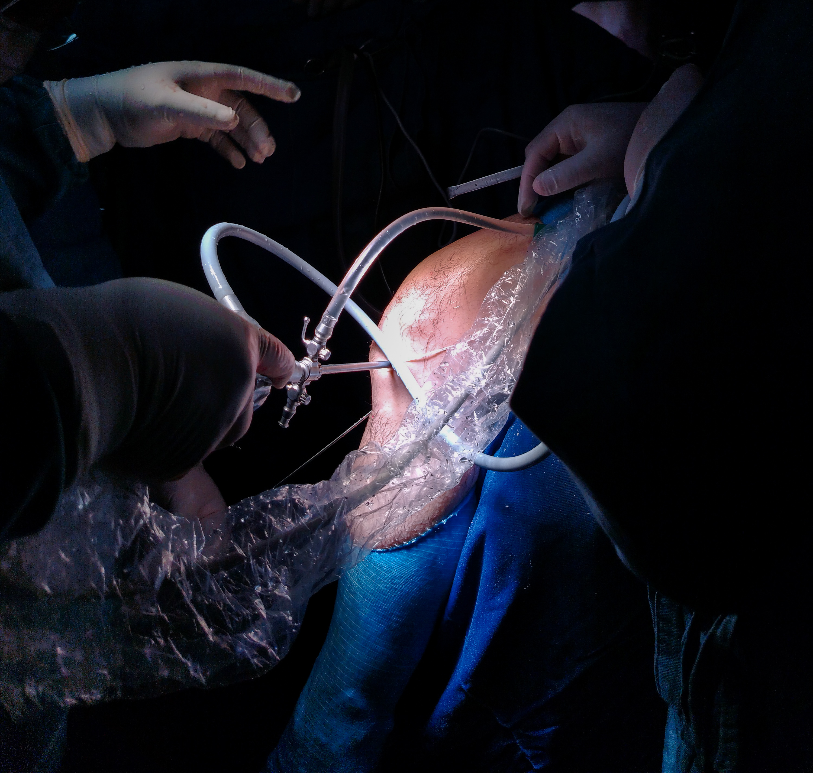
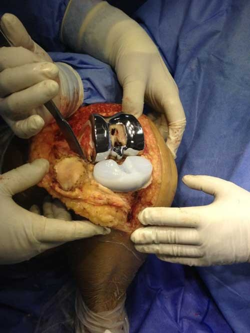
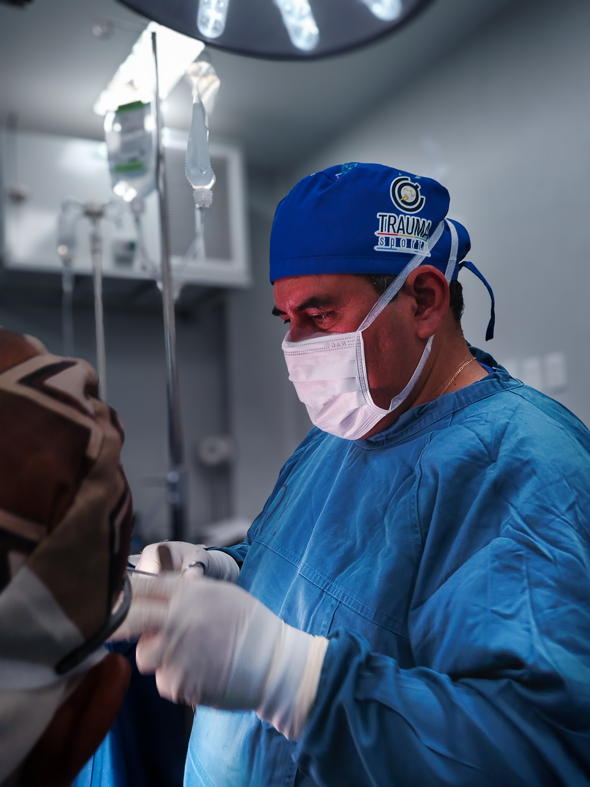
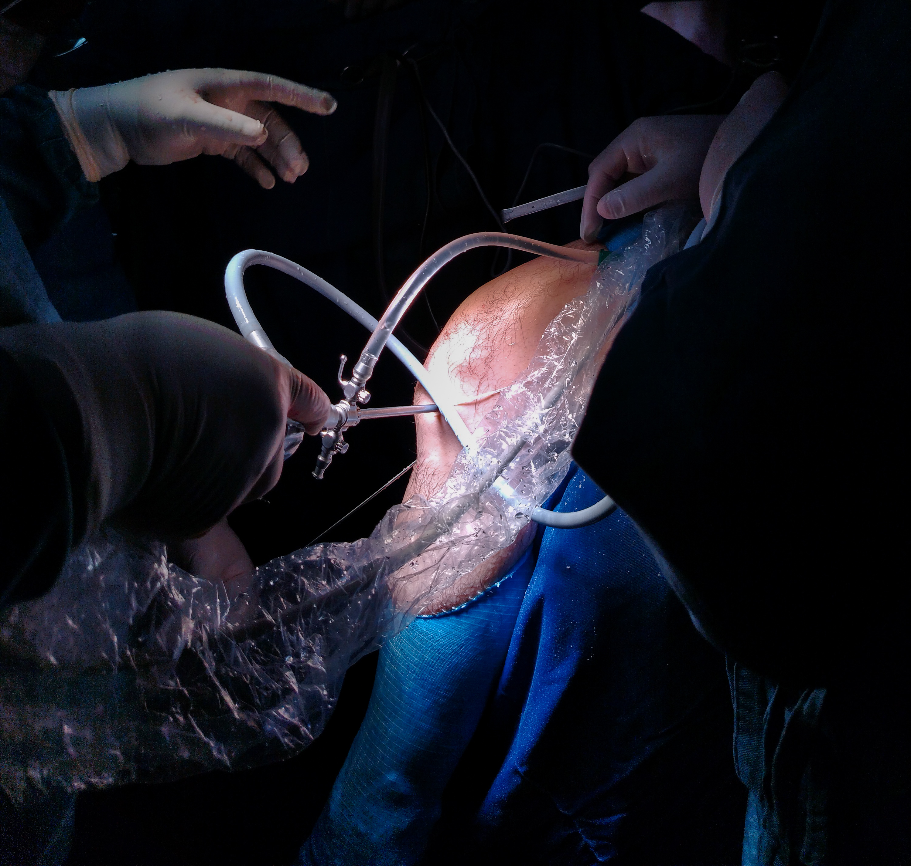
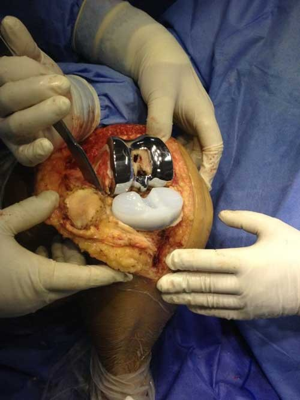
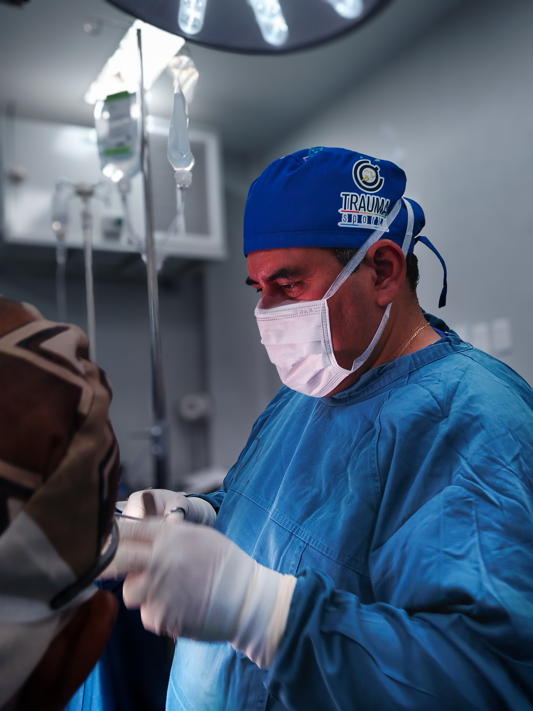

"En el mundo de la ortopedia y traumatología, mi pasión es brindar un cuidado integral y personalizado a cada paciente.
Con años de experiencia, he trabajado con pacientes de todas las edades y condiciones.
Mi objetivo es brindar un servicio de calidad y atención personalizada a cada paciente."
 





"Como especialista en ortopedia y traumatología, me dedico al diagnóstico, tratamiento y rehabilitación de lesiones y enfermedades del sistema musculoesquelético. Mi objetivo es ayudarte a recuperar tu movilidad, aliviar el dolor y mejorar tu calidad de vida, ya sea a través de tratamientos conservadores o procedimientos quirúrgicos avanzados. Brindo atención personalizada a cada paciente, ya sea que enfrentes una lesión deportiva, una fractura, desgaste articular o molestias articulares crónicas. Utilizo tecnología moderna como la artroscopía y técnicas mínimamente invasivas para lograr resultados seguros, eficaces y con una recuperación más rápida."
Ofrecemos tratamientos personalizados con tecnología de vanguardia para mejorar su calidad de vida.
Contáctenos